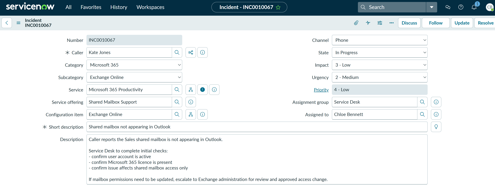
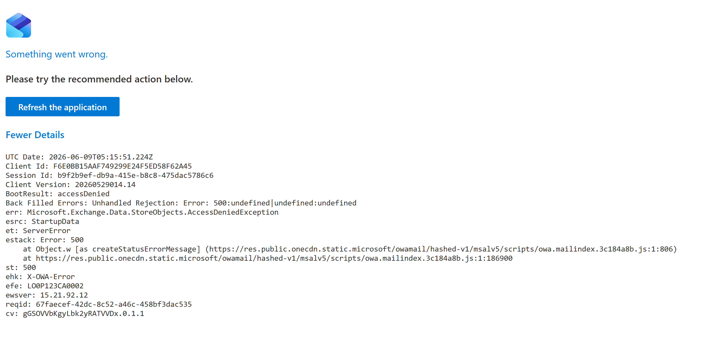
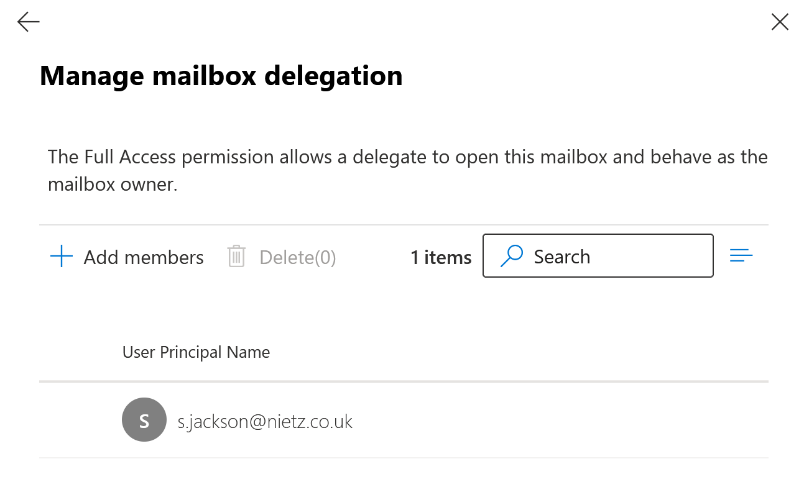
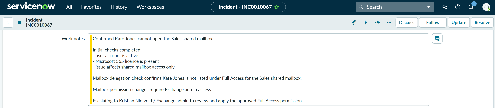
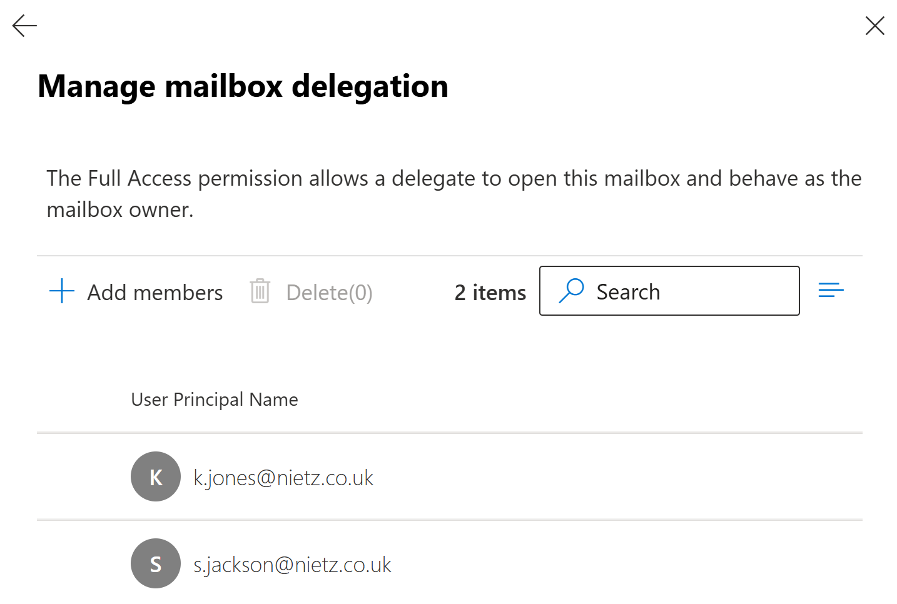
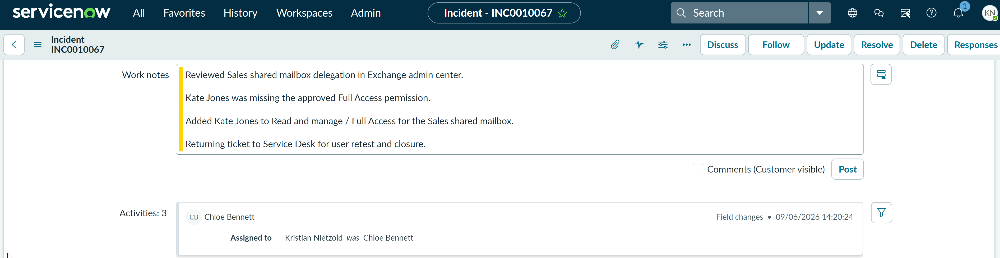
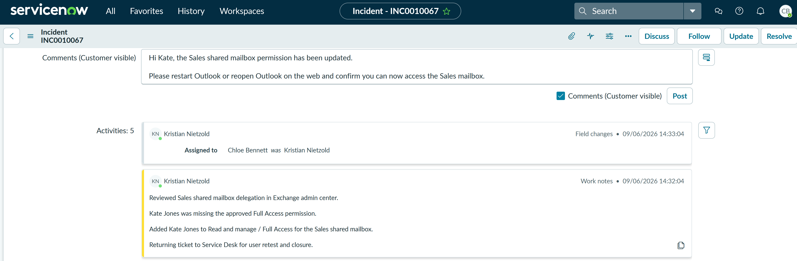
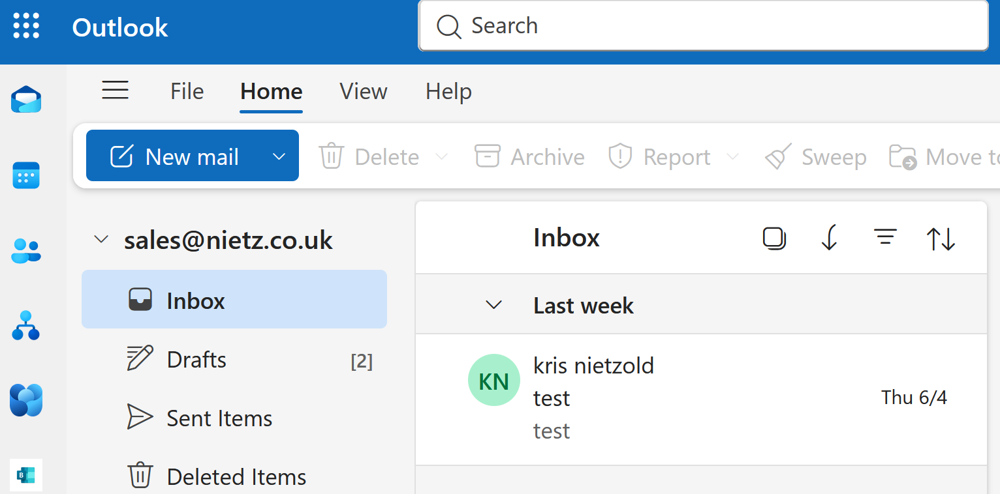
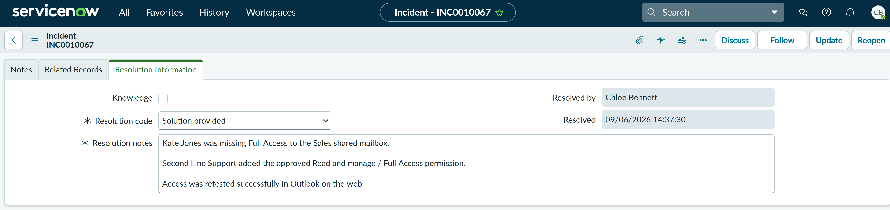

TS-006: Shared mailbox not appearing in Outlook
Restored access to the Sales shared mailbox after confirming that the affected user was missing the required Exchange Online Full Access permission.
Scenario
Kate Jones reported that the Sales shared mailbox was not appearing in Outlook. When the mailbox was opened directly in Outlook on the web, access failed with an access denied error. I treated this as an Exchange Online shared mailbox delegation issue rather than a general Outlook client fault.
ServiceNow Ticket
The incident was logged as a Microsoft 365 Exchange Online issue and assigned to the Service Desk. The ticket was opened for Kate Jones with category Microsoft 365, subcategory Exchange Online, service Microsoft 365 Productivity, service offering Shared Mailbox Support, configuration item Exchange Online, impact 3 - Low, urgency 2 - Medium, and priority 4 - Low.

Investigation
I reproduced the user-facing issue by attempting to open the Sales shared mailbox in Outlook on the web. The mailbox failed to open and returned an access denied error, confirming the problem was related to mailbox access rather than the mailbox being hidden from the interface only.

I then checked the Sales shared mailbox delegation settings in Exchange Online. The Read and manage / Full Access list showed Sam Jackson only, confirming that Kate Jones was not currently delegated access to the mailbox.


Chloe Bennett completed the first-line checks, confirmed the missing mailbox delegation, prepared the escalation work note, and reassigned the ticket to Second Line Support because applying Full Access mailbox permissions requires Exchange administration access.
Fix Applied
Kristian Nietzold reviewed the Sales shared mailbox delegation in Exchange admin center and added Kate Jones to Read and manage / Full Access. This restored Kate's ability to open and manage the shared mailbox.



After applying the change, Kristian prepared a ServiceNow work note documenting the privileged Exchange admin action and returned the ticket to Service Desk for user retest and closure.
Validation
The ServiceNow activity history recorded Kristian's work note and reassignment back to Chloe. Chloe then prepared a customer-visible request asking Kate to restart Outlook or reopen Outlook on the web and confirm that the Sales mailbox was accessible.
I validated the fix in Outlook on the web. The Sales shared mailbox opened successfully and the inbox was visible, confirming that the Full Access permission change had resolved the issue.

Resolution
The ticket was resolved using the resolution code Solution provided. The resolution notes summarised the cause, the Second Line Support action, and successful validation in Outlook on the web.

Summary
- I logged a P4 Low Microsoft 365 > Exchange Online incident for a single-user shared mailbox access issue.
- I reproduced the user-facing access denied error in Outlook on the web.
- I confirmed Kate Jones was missing from the Sales shared mailbox Full Access delegation list.
- Kept the privileged mailbox change with Second Line Support while Service Desk retained triage, communication and closure ownership.
- Kristian Nietzold applied the approved Exchange Online mailbox delegation change.
- Chloe Bennett prepared the user retest request, validated mailbox access, and resolved the ticket.
- The final ServiceNow resolution used Solution provided with concise cause, fix, and validation notes.